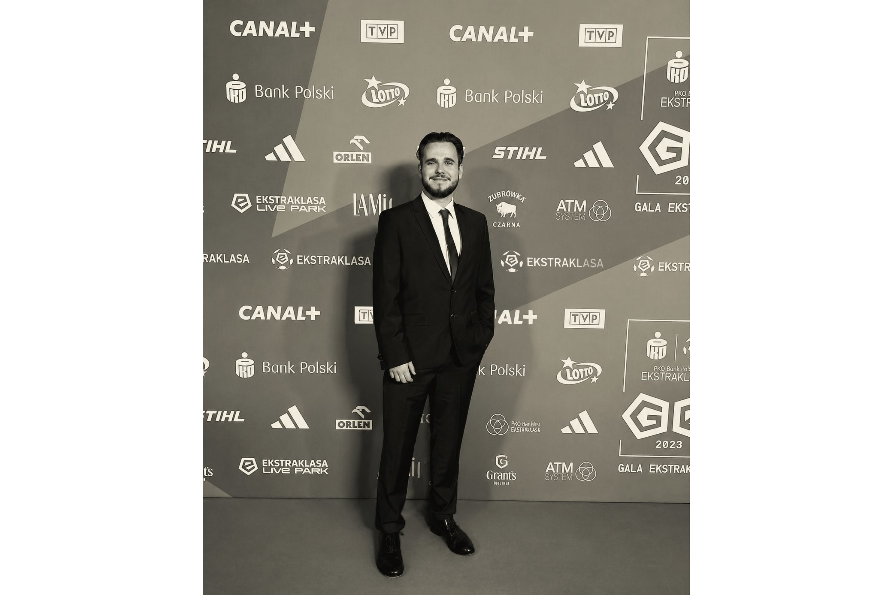

I watched the same gap for six years. Then I built the bridge.
Born and raised in Brussels. Six years in football, four of them on the brand and retail side of the table at adidas and Unisport, across Central and Eastern Europe. At adidas I ran kit design programmes end to end for three properties: Legia Warszawa Ladies, the Legia AMP team and the Latvian Football Federation. Brief, design approval, production, launch.
In every one of those programmes, the crest went on the shirt and everything the supporters had built stayed in the stands.
Nobody's job is to fix that. The global agencies cover the region from London, and the local agencies have rarely sat inside a club's commercial department. Neither has made a garment. I’ve done both, in two languages. I wrote my MSc thesis on fashion’s influence on football, which is why the cultural side and the product side are the same job.
I work in the languages the material is written in. Polish and French natively, which covers most of the territory. The research for this is forums, fanzines, club archives and local press, none of which survives translation.
MOST is the Polish word for bridge.